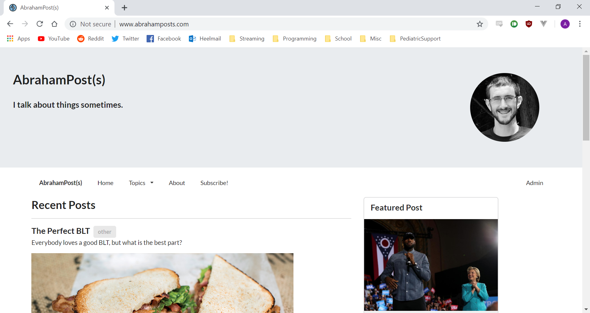
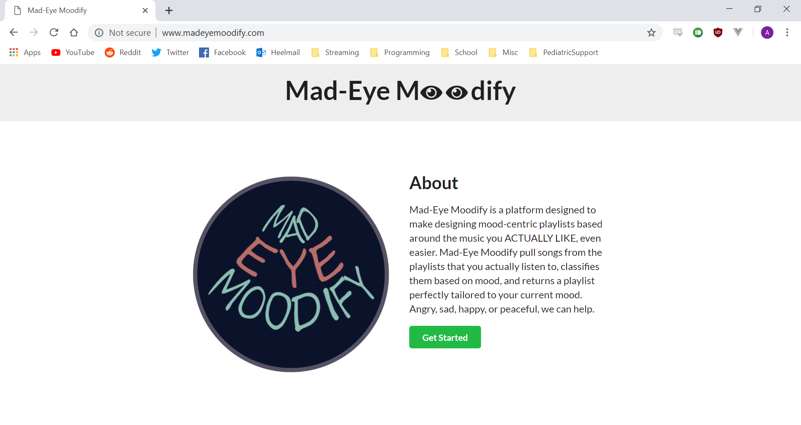

My Blog
I created a blog so that I can post my thoughts about
several different things I am interested in. I designed it
using Semantic UI, and the backend is a Node.js application running
express.js, connected to a postgres database.

MadEyeMoodify
This is an app I developed at HackNC2018 with several friends of mine. This application
allows a user to log into their Spotify account, and then helps them create playlists
of songs from their library. Unfortunately, Spotify has made a slight change to their
API response and it has introduced a bug, but hopefully this site will be back up and
running soon (I can assure you it worked at the time of the Hackathon!!)!
